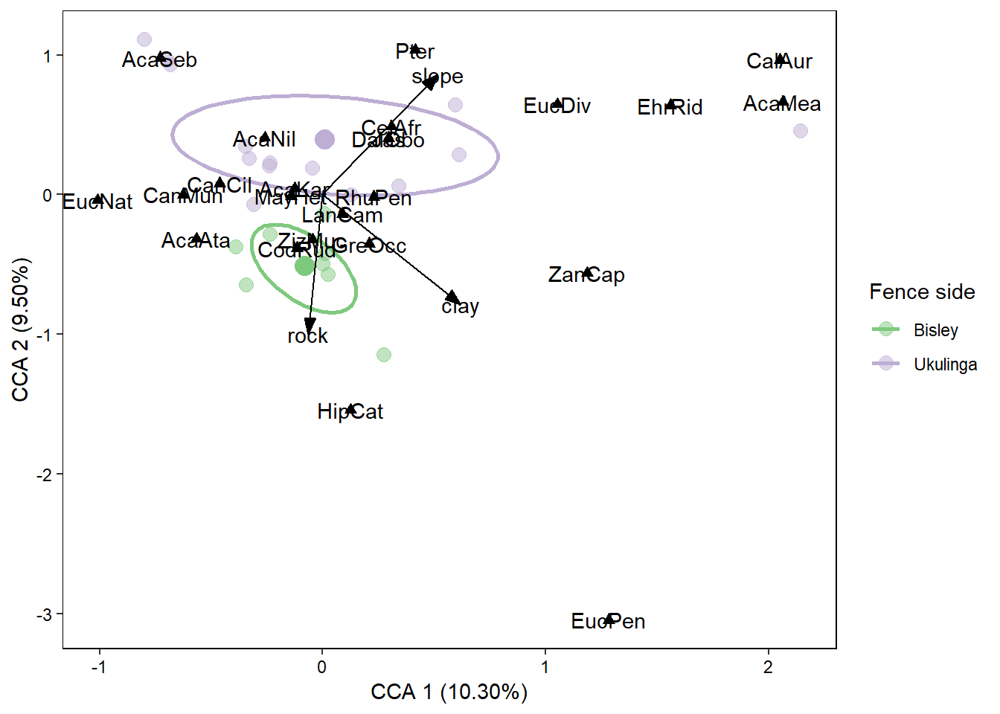

Multivariate statistics describes a collection of analysis methods which considers the relationship between multiple response variables (these response variables are generally termed the “species” variables. This is because these analysis methods were principly developed to study the relationship between multiple species abundances). These species variables can either occur on their own (indirect gradient analysis) or be explained by one or more “environmental” variables. Environmental variables are those which are thought to explain the presence of the species variables. I cannot teach you the underlying principles of multivariate statistics but head over to here to get a theoretical introduction and look here for tutorials using R. The data that we would collect for such an analysis would then be a species composition table which looks somthing like this:
head(fence_species)## # A tibble: 6 x 25
## AcaAta AcaKar AcaNil AcaSeb CalAur CanCil CanMun CelAfr CodRud DalObo
## <dbl> <dbl> <dbl> <dbl> <dbl> <dbl> <dbl> <dbl> <dbl> <dbl>
## 1 0 83.1 16.9 0 0 0 0 0 0 0
## 2 0 41.1 14.7 0 0 0 0 7.33 2.93 0
## 3 0 55.1 14.7 0 0 0 0 3.68 12.9 0
## 4 0 66.7 19.4 0 0 5.56 0 2.78 5.56 0
## 5 20.1 4.46 8.93 0 0 0 0 4.46 40.2 0
## 6 0 22.2 61.1 16.7 0 0 0 0 0 0
## # ... with 15 more variables: EhrRid <dbl>, EucDiv <dbl>, EucNat <dbl>,
## # EucPen <dbl>, GreOcc <dbl>, HipCat <dbl>, Jas <dbl>, LanCam <dbl>,
## # Lip <dbl>, MayHet <dbl>, Pter <dbl>, RhuPen <dbl>, AcaMea <dbl>,
## # ZanCap <dbl>, ZizMuc <dbl>This is a dataset containing data collected during a fenceeline study between Bisley Nature Reserve and Ukulinga Research Farm. The species (tree species) are the columns, each row is a new plot where species compositions were carried out. If no individuals of a particular species were found in a given plot the composition equals zero. To start with we will just want to see how these species are ordinated, is the composition relatively uniform or are there distinct gradients which the species vary along.
Basic R contains some multivariate funcitoning (PCA and clustering) but to carry out direct gradient analysis where the environmental variables are essentially treated as treatments which describe the change in composition between sites we will need to download vegan (vegetation analysis). Even though it was initially produced for vegetation ecologists the methodology holds true across disciplines. Anyone interested in species compostion and diversity analyses would find this package incredibly useful.
For example one could conduct a multivariate analysis on species composition data from coral composition as the species data based on environmental factors such as water oxygen and carbon levels, turbidity, current direction, and pH. Interestingly, your species dataset doesn’t necessarily need to be made up of species composition data. You could have soil chemical properties as species and physical environmental properties as the explanatory variables - an example we will consider later.
If you haven’t already done so please install and load vegan now:
install.packages("vegan")
library(vegan)Many multivariate analyses are conducted on transformed or standardised matricies. In order to accurately carry out the analysis successfully you will need to standardise or transform your datasets. vegan has two built-in functions for doing this. The first (either dist or vegdist) is to generate distance matricies. These are priciply done when carrying out clustering analyses to produce dendrograms. The other function is decostand which standardises community datasets based on a particular function. Depending on the type of analysis we are carrying out we will likely carry out different standardisation methods. this paper is written to describe where and when we should carry out specific standardisation methods. It also gives a fanstastic (albeit quite brief) introduction into multivariate statistics. If you are interested in these methods I really encourage you to read through this.
The gist of their argument is that traditionally one would carry out a detrended correspondance analysis (DCA), consider the gradient lengths, and then pick an analysis approach based on that length - short gradients (RDA/CCA), medium gradients (CCA), long gradients (DCA). The above paper, however, argues that conducting analyses on untransformed datasets can give unfair or unwarranted weighting to rare species. Depending on your needs you should alternatively choose a transformation method that best suits your desired analysis.
In general I would suggest using the Hellinger transformation as a failsafe. Bray-Curtis is also a very popular method one could use. If you are struggling to choose a method then give the above paper a good read, or if you are still unsure then have a look at a famous article that has conducted an analysis similar to yours and follow their method.
Okay, let’s give this a bash. Let us compute a correspondance analysis (CA) for the fenceline data. Import it now (choose the “species” sheet) and name it fence_species. For simplicity, vegan simply has two functions for ordination, rda and cca. rda will compute both PCA and RDA, and cca will compute CA and CCA. This is because the only difference between PCA and RDA is that one incorporates environmental variables into it. If we simply do not include the environmental variables then we will just be running the indirect gradient analysis. Including environmental variables will then automatically output the direct gradient analysis. So to carry out a CA we would go:
fence_species_hel <- decostand(fence_species, method = "hellinger")
fence.ca <- cca(fence_species_hel)We’ve now carried that out and stored the output in a new variable called fence.ca. This little variable contains a stack of information that we can access in a very simple manner. The best way to extract these data would be:
fence_species_hel <- decostand(fence_species, method = "hellinger")
fence.ca <- cca(fence_species_hel)
summary(fence.ca)##
## Call:
## cca(X = fence_species_hel)
##
## Partitioning of scaled Chi-square:
## Inertia Proportion
## Total 2.265 1
## Unconstrained 2.265 1
##
## Eigenvalues, and their contribution to the scaled Chi-square
##
## Importance of components:
## CA1 CA2 CA3 CA4 CA5 CA6 CA7
## Eigenvalue 0.4590 0.3259 0.2447 0.22081 0.17698 0.16669 0.14729
## Proportion Explained 0.2026 0.1439 0.1080 0.09748 0.07813 0.07359 0.06502
## Cumulative Proportion 0.2026 0.3465 0.4545 0.55198 0.63011 0.70369 0.76872
## CA8 CA9 CA10 CA11 CA12 CA13
## Eigenvalue 0.12679 0.09390 0.09043 0.06869 0.05747 0.03234
## Proportion Explained 0.05597 0.04145 0.03992 0.03032 0.02537 0.01428
## Cumulative Proportion 0.82469 0.86614 0.90606 0.93638 0.96175 0.97603
## CA14 CA15 CA16 CA17 CA18
## Eigenvalue 0.020709 0.016032 0.010507 0.004590 0.0016957
## Proportion Explained 0.009142 0.007077 0.004638 0.002026 0.0007486
## Cumulative Proportion 0.985174 0.992251 0.996890 0.998916 0.9996647
## CA19 CA20
## Eigenvalue 0.0004076 0.0003519
## Proportion Explained 0.0001799 0.0001553
## Cumulative Proportion 0.9998447 1.0000000
##
## Scaling 2 for species and site scores
## * Species are scaled proportional to eigenvalues
## * Sites are unscaled: weighted dispersion equal on all dimensions
##
##
## Species scores
##
## CA1 CA2 CA3 CA4 CA5 CA6
## AcaAta -0.2863 0.71355 -0.247821 0.39085 0.89225 1.068243
## AcaKar 0.3188 0.01163 0.300865 0.21716 -0.12040 -0.018671
## AcaNil 0.7378 -0.42868 -0.003670 0.26127 -0.07103 0.129597
## AcaSeb 1.3532 -1.08209 -1.178422 -0.44799 -0.10474 0.001358
## CalAur 1.1106 -0.24429 2.670201 -1.33762 -1.07108 2.034862
## CanCil 0.7984 -0.25499 1.592470 2.42027 0.56679 -1.709445
## CanMun -0.2497 1.01486 -0.357598 0.54243 0.19698 1.366510
## CelAfr -0.0107 -0.26573 0.722807 0.72854 1.26502 -0.847370
## CodRud -0.3282 0.53635 -0.005583 0.12133 -0.10464 -0.160677
## DalObo -0.2675 0.53350 1.841837 -2.21203 -0.33367 -0.730562
## EhrRid -1.6034 -1.57895 0.539296 -0.20381 0.63467 -0.090352
## EucDiv 0.3276 0.19761 2.199571 -1.83441 -0.65213 0.463703
## EucNat -0.1617 1.21174 -0.385704 0.40355 0.68194 1.678872
## EucPen -0.2664 0.93936 -0.298217 0.12834 -0.72953 -1.208079
## GreOcc -0.8941 0.06948 -0.233191 0.14019 -0.74414 -0.010459
## HipCat -0.3795 1.00238 -0.391977 0.21938 -0.18794 -0.059064
## Jas -0.2675 0.53350 1.841837 -2.21203 -0.33367 -0.730562
## LanCam -0.4954 0.05783 -0.402519 -0.09794 -0.18023 -0.177423
## MayHet -0.2255 0.31306 -0.294091 -0.81474 0.68861 -0.222560
## Pter 0.3799 0.14516 0.483079 0.43830 0.60118 -1.000515
## RhuPen 0.2234 0.21523 0.065608 -0.56853 0.36353 0.067300
## AcaMea -2.6767 -2.49819 0.034468 0.02885 0.13280 0.697844
## ZanCap -0.2340 -0.18227 0.531941 0.12161 0.99669 -1.223591
## ZizMuc 0.1279 0.33277 -0.532367 -0.87372 0.27413 -0.425039
##
##
## Site scores (weighted averages of species scores)
##
## CA1 CA2 CA3 CA4 CA5 CA6
## sit1 0.9786 -0.38478 0.84238 1.04564 -0.5935 0.1648
## sit2 -0.2177 -0.74288 0.94687 0.11824 1.8595 -1.2313
## sit3 0.3799 0.14516 0.48308 0.43830 0.6012 -1.0005
## sit4 0.7984 -0.25499 1.59247 2.42027 0.5668 -1.7094
## sit5 -0.7381 -0.03560 -0.03277 0.43958 1.6564 0.4637
## sit6 1.6778 -1.42484 -0.84168 0.33726 -0.5273 0.3360
## sit7 1.6459 -1.37752 -0.77455 0.35820 -0.5323 0.3215
## sit8 -3.2363 -3.20908 0.05388 -0.08972 -0.3070 0.7654
## sit9 0.4003 -0.09497 -1.90924 -2.49952 1.1356 -0.9105
## sit10 0.7339 -0.18556 -0.51360 -0.57071 0.1441 -0.1972
## sit11 0.3402 0.55870 -0.05982 -0.14803 1.4571 1.2295
## sit12 1.8444 -1.67355 -1.35249 0.03947 -0.5336 0.3005
## sit13 -0.2675 0.53350 1.84184 -2.21203 -0.3337 -0.7306
## sit14 1.1106 -0.24429 2.67020 -1.33762 -1.0711 2.0349
## sit15 -0.2300 0.05983 -0.11440 0.37661 -1.3397 -0.1595
## sit16 -0.4141 0.64738 -0.30514 0.80167 -0.7082 0.7835
## sit17 -0.6468 0.63654 -0.53978 -0.05185 -1.2098 -0.7987
## sit18 -0.7286 0.47497 -0.39336 0.47274 -1.6537 -0.4872
## sit19 -0.6519 0.79574 -0.49947 -0.27900 -0.6342 -0.4984
## sit20 -0.1617 1.21174 -0.38570 0.40355 0.6819 1.6789
## sit21 -0.4769 1.14223 -0.46416 0.64015 0.5284 1.1357
## sit22 -0.2664 0.93936 -0.29822 0.12834 -0.7295 -1.2081This output here is very similar to what might be generated by CANOCO or PAST. The most important things for us here are the eigenvalues for CA1 and CA2 as well as the proportion of variance explained by these first two axes. The greater the variance explained the greater the fit of your data to the CA model.
Now this computation is okay but we can radically improve it if we had some explanatory variables to include in the analysis. Fortunately we do. Please load the second sheet of the Fenceline dataset - envi, call it fence_envi:
head(fence_envi)## # A tibble: 6 x 4
## slope rock clay site
## <dbl> <dbl> <dbl> <chr>
## 1 22 4 2 Ukulinga
## 2 39 3 2 Ukulinga
## 3 30 2 2 Ukulinga
## 4 19 2 2 Ukulinga
## 5 15 1 2 Ukulinga
## 6 18 0 1 UkulingaThere are four variables here which describe the physical terrain of each plot that was sampled as well as a grouping variable which describes which side of the fence the data were collected on. We can then incorporate these variables into our analysis as:
fence_cca <- cca(fence_species_hel ~ slope*rock + clay + site,
data = fence_envi)The overall idea here is very similar to how our univariate statistics functioned. We have a response variable (which for us here happens to be an entire data.frame) which is then a function of a combination of environmental variables (you can enter these in the same manner as in univariate analyses to produce complex interaction terms). I have chosen what I think might be an ecologically reasonable model but you can play around with this and see what else is possible.
Once that analysis is run we could call up summary() as before to obtain eigenvalues and variance explanation. We can also produce an ANOVA table for this analysis because we have both response variables and treatments. There are two options available to us. We can look at the effect of axis or the effect of terms on the distribution of the species variables:
fence_cca <- cca(fence_species_hel ~ slope*rock*clay + site,
data = fence_envi)
anova(fence_cca, by = "axis")## Permutation test for cca under reduced model
## Forward tests for axes
## Permutation: free
## Number of permutations: 999
##
## Model: cca(formula = fence_species_hel ~ slope * rock * clay + site, data = fence_envi)
## Df ChiSquare F Pr(>F)
## CCA1 1 0.28964 2.9187 0.216
## CCA2 1 0.23267 2.3446 0.377
## CCA3 1 0.14627 1.4740 0.926
## CCA4 1 0.10914 1.0998 0.978
## CCA5 1 0.07931 0.7992 0.993
## CCA6 1 0.06128 0.6175 0.995
## CCA7 1 0.03731 0.3760 1.000
## CCA8 1 0.01953 0.1968 0.997
## Residual 13 1.29007anova(fence_cca, by = "terms")## Permutation test for cca under reduced model
## Terms added sequentially (first to last)
## Permutation: free
## Number of permutations: 999
##
## Model: cca(formula = fence_species_hel ~ slope * rock * clay + site, data = fence_envi)
## Df ChiSquare F Pr(>F)
## slope 1 0.15354 1.5472 0.119
## rock 1 0.16030 1.6154 0.069 .
## clay 1 0.06666 0.6717 0.832
## site 1 0.16765 1.6894 0.050 *
## slope:rock 1 0.05435 0.5477 0.927
## slope:clay 1 0.05124 0.5164 0.926
## rock:clay 1 0.10789 1.0872 0.381
## slope:rock:clay 1 0.21352 2.1517 0.014 *
## Residual 13 1.29007
## ---
## Signif. codes: 0 '***' 0.001 '**' 0.01 '*' 0.05 '.' 0.1 ' ' 1It seems then that there are some almost significant results but not quite. For the sake of this exercise we will keep all the variablese in the model. Given the almost significant effect of site we will illustrate multivariate pairwise comparisons with this variable. There are two methods we can use to assess multivariate differences:
Permanova - looks at whether there is a difference in the centroid location of a group sites classified according to a treatment. This is what we have jsut done above with anova(). When anova() detects that the supplied object is a multivariate object it will automatically assign permutations to it (“Number of permutations = 999”).
Permdisp - looks at whether there might be a difference in the variation around the centroids of particular treatments. This is basically a multivariate Levene’s test for the homogeneity of variance test. Use betadisp() from vegan.
To carry out a permdisp analysis we need to use a distance matrix rather than a standardised data.frame and so we will need vegdist() rather than decostand(). There are several distance methods to choose from. For our purposes we will keep it as the default which is"bray" - the Bray-Curtis distance matrix:
## build the distance matrix:
fence_species_bray <- vegdist(fence_species)
## carry out the analysis using the new distance matrix with group (or treatment) being the site variable within the fence_envi dataset:
fence_bd <- betadisper(fence_species_bray, group = fence_envi$site)
## then we can simply run a TukeyHSD test on fence_bd to assess the difference between the two sites. If the confidence intervals do not cross zero then our associated p-value should be < 0.05:
TukeyHSD(fence_bd)## Tukey multiple comparisons of means
## 95% family-wise confidence level
##
## Fit: aov(formula = distances ~ group, data = df)
##
## $group
## diff lwr upr p adj
## Ukulinga-Bisley 0.1571086 0.008346833 0.3058703 0.0394861Our two sites are thus significantly different from one another. To dig into these differences a little more we can see which tree species are responsible for the dissimilarity between sites. The analysis we run here is called “Similarity Percentages” which is shortened to simper() in vegan. It works very similarly to the previous analysis, however, the analysis does not require a distance matrix - it carries out a Bray-Curtis transformation within the analysis itself. We would go:
## here we need to tell the analysis to run permutations in order to produce a p-value. This p-value will describe the probability of getting a larger or equal average contribution to overall dissimilarity (the second column)
fence_simper <- simper(fence_species, group = fence_envi$site, permutations = 999)
summary(fence_simper)##
## Contrast: Ukulinga_Bisley
##
## average sd ratio ava avb cumsum p
## AcaKar 0.1210359 0.088605 1.3660 33.6088 23.4889 0.1765 0.858
## CodRud 0.1118435 0.057119 1.9581 7.0823 25.8138 0.3396 0.003 **
## AcaNil 0.1072946 0.099271 1.0808 23.0772 3.3008 0.4960 0.192
## GreOcc 0.0907471 0.051042 1.7779 2.6884 18.2140 0.6284 0.003 **
## LanCam 0.0485070 0.036834 1.3169 3.9719 10.3764 0.6991 0.043 *
## AcaAta 0.0385433 0.054154 0.7117 3.0157 5.8564 0.7553 0.242
## RhuPen 0.0351045 0.034200 1.0265 6.5218 2.9838 0.8065 0.942
## AcaSeb 0.0319898 0.051978 0.6154 6.3175 0.0000 0.8531 0.664
## MayHet 0.0182231 0.026356 0.6914 2.5320 1.8363 0.8797 0.555
## EhrRid 0.0164945 0.038283 0.4309 3.2574 0.0000 0.9038 0.707
## ZizMuc 0.0147228 0.023760 0.6196 2.3072 1.2524 0.9252 0.661
## HipCat 0.0114232 0.016869 0.6772 0.0000 2.1929 0.9419 0.005 **
## AcaMea 0.0104955 0.034994 0.2999 2.0727 0.0000 0.9572 0.682
## CanMun 0.0076782 0.015858 0.4842 0.0000 1.5356 0.9684 0.120
## CelAfr 0.0066008 0.011468 0.5756 1.3036 0.0000 0.9780 0.772
## EucDiv 0.0032923 0.008435 0.3903 0.6502 0.0000 0.9828 0.646
## EucPen 0.0025907 0.006885 0.3763 0.0000 0.4902 0.9866 0.362
## CalAur 0.0024113 0.008735 0.2760 0.4762 0.0000 0.9901 0.444
## ZanCap 0.0021462 0.005687 0.3774 0.3142 0.1225 0.9932 0.452
## CanCil 0.0020094 0.007279 0.2760 0.3968 0.0000 0.9962 0.444
## DalObo 0.0006956 0.002520 0.2760 0.1374 0.0000 0.9972 0.415
## Jas 0.0006956 0.002520 0.2760 0.1374 0.0000 0.9982 0.415
## Pter 0.0006649 0.002409 0.2760 0.1313 0.0000 0.9992 0.420
## EucNat 0.0005682 0.001510 0.3763 0.0000 0.1136 1.0000 0.340
## Lip 0.0000000 0.000000 NaN 0.0000 0.0000 1.0000 1.000
## ---
## Signif. codes: 0 '***' 0.001 '**' 0.01 '*' 0.05 '.' 0.1 ' ' 1
## Permutation: free
## Number of permutations: 999The output here is a little confusing - I will not attempt to explain it here but will suggest you read ?simper very carefully as well as looking into how dissimialrity measures (such as Bray-Curtis) are calculated. In brief though this analysis tells us that Acacia karoo, Codia ruddis, and Acacia nilotica are the most important species explaining the differences between the two sites. Let’s try our hand at visualising these results to see if our statistics give a similar output to our plots.
ggordiplots()I am not going to lie - drawing these plots is not the simplest exercies but I will work through it with you slowly here. At present there is no “official” package that we can access to plot these results - we will need to access github to download a package in development called ggordiplots. vegan has some plotting capabilities but in all honesty they are very poor and cannot be customised much and so rather than even introducing you to those methods we will dive straight into this method. In order to access packages that are still in development we will need to download a new package called devtools:
install.packages("devtools")Once that is installed we will call it up from the library as normal:
library(devtools)and then we will use one of it’s functions:
install_github("jfq3/ggordiplots")install_github() is a function which tells R to look at GitHub as opposed to CRAN to find files. The main argument then dictates where to look within GitHub to find the desired package - “user/repository” - so in our instance we are going to jfq3’s site and looking in the ggordiplots repository for the ggordiplots package. If there is anything there it will then be downloaded and installed. Once installed you would then call up the package from the library in the normal way:
library(ggordiplots)What I’ll do now is just produce the plot and then describe the code from start to finish:
fence_species_hell <- decostand(fence_species,
method = "hellinger")
fence_cca <- cca(fence_species_hell ~ slope*rock*clay,
data = fence_envi)
fence_species_ggordi <- gg_ordiplot(fence_cca,
groups = fence_envi$site, plot = FALSE)
fence_species_scores <- as.data.frame(scores(fence_cca,
choices = c(1,2),
display = "species"))
## rownames_to_column() needs tidyverse
fence_species_scores <- rownames_to_column(fence_species_scores,
var = "species")
fence_envi_scores <- envfit(fence_cca ~ slope*rock*clay,
data = fence_envi)
fence_envi_scores_vector <- as.data.frame(fence_envi_scores$vectors$arrows)
fence_envi_scores_vector <- rownames_to_column(fence_envi_scores_vector,
var = "envi")
fence_cca_plot <- ggplot() +
geom_point(data = fence_species_ggordi$df_ord,
aes(x = x, y = y, colour = Group),
size = 3.5, alpha = 0.5, stroke = 0) +
geom_point(data = fence_species_ggordi$df_spiders,
aes(x = cntr.x, y = cntr.y, colour = Group),
size = 4.5, show.legend = FALSE) +
geom_path(data = fence_species_ggordi$df_ellipse,
aes(x = x, y = y, colour = Group),
size = 1) +
geom_segment(data = fence_envi_scores_vector,
aes(x = 0, y = 0, xend = CCA1, yend = CCA2),
arrow = arrow(angle = 20, length = unit(0.3, "cm"),
type = "closed")) +
geom_text(data = fence_envi_scores_vector,
aes(x = CCA1, y = CCA2, label = envi)) +
geom_point(data = fence_species_scores,
aes(x = CCA1, y = CCA2),
shape = 17,
size = 2) +
geom_text(data = fence_species_scores,
aes(x = CCA1, y = CCA2,
label = species)) +
theme(panel.background = element_rect(fill = "white",
colour = "black"),
panel.grid = element_blank(),
legend.key = element_blank(),
text = element_text(size = 11),
axis.text = element_text(colour = "black")) +
labs(x = "CCA 1 (10.30%)", y = "CCA 2 (9.50%)",
colour = "Fence side") +
scale_color_brewer(palette = "Accent")
fence_cca_plot
That is the output we get which looks pretty neat. You can play around with the colour schemes within ggplot, however, what I find a lot easier is to save this plot as a .svg and open it up in Inkscape, ungroup all the layers and then adjust everthing from there. An incredibly useful tool that Inkscape has is to select objects by similar fill and stroke (outline) colours. This makes it very easy to change all of that selected colour to another shade, for instance.
Now that we have a handle on producing a fairly complex plot of species, sites and environmental variables I’d like you to try applying these techniques to the sweetsour dataset. This dataset contains species variables which are soil chemical properties. The environmental variables are then climatic data and physical properties that could potentially drive the underlying soil chemical properties. What your job is is to figure out how to produce the plot below. I will outline the steps required but you will need to put the code together yourselves.
PCA Process:
standardize method.rda()) on the standardised species data.ggordiplot() to plot the site data grouped by veld type.RDA process:
standardize method.rda()) on the standardised species data (For this analysis the model below only contains the environmental variable main effects, no interaction effects are present).ggordiplot() to plot the site data grouped by veld type.This is a pretty cool plot but there are quite a few overlapping labels and some covarying environmental variables. You can pick one of the covarying variables (maybe the less significant one) and remove it from the model. You can then save the figure and open it in Inkscape and move the labels around to make it look pretty smart.